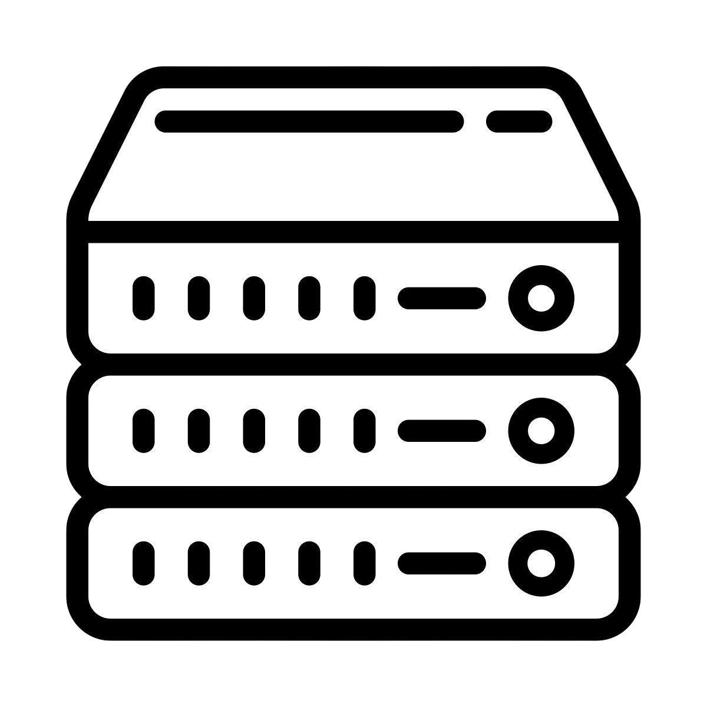

A professional DIN Rail relay module designed for reliable, secure and fully local smart home automation. Built around the ESP32-C6 with OTA updates, MQTT and ESP-NOW backup communication.

No cloud account required. Everything stays inside your own network.
Central communication between every ElectroSDM device.
Update all compatible modules directly from one interface.
Create users, permissions and secure local access.
The ElectroSDM Server can run on multiple platforms.
Run the ElectroSDM Server on your own hardware or choose the optional ElectroSDM DIN Rail Server for the easiest installation.
Install the ElectroSDM Server on your own Windows PC, Linux computer, Mini PC or compatible NAS. This option provides all server features at no additional hardware cost.
An optional plug-and-play server designed for installation directly inside the electrical cabinet. It saves space, reduces cable clutter and keeps your complete smart home system organized in one central location.
Regardless of which option you choose, every installation runs the exact same ElectroSDM Server software. Your devices, automations and features remain identical.
Fits directly inside the electrical cabinet without requiring a separate computer.
Designed for continuous operation with low power consumption.
Ready to use with the ElectroSDM Server software already installed.
Receive OTA server updates and future improvements with minimal effort.
Runs entirely on your local network without requiring any cloud services.
Buying the ElectroSDM DIN Rail Server is completely optional. You are always free to run the ElectroSDM Server on your own hardware.
Windows 10 or newer.
Ubuntu, Debian and other modern Linux distributions.
Recommended for permanent installations with low power consumption.
Compatible with supported NAS systems running Docker or Linux.
Less than 500 MB required for the server software.
Ethernet connection recommended for maximum reliability.